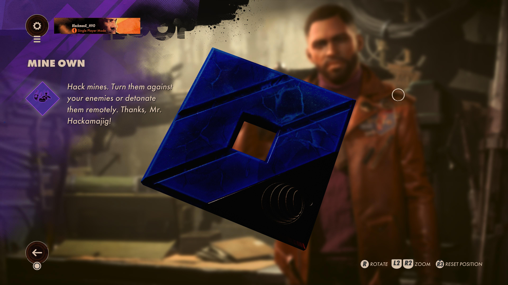

"Trinkets"
"Character Trinkets"
Spring Heel
The Spring Heel trinket is actually your first trinket in game, and is given too you at the start of every single loop. It allows the player to be able to which can be very useful for extending your reach with the Shift slab. I personally always run this trinket which honestly bothers me, since I feel like I shouldn't have to waste a trinket space for the ability to double jump in a game where teleportation exists. I feel like double jump should just be given to you at that point, but it is still useful, so I keep it.
Never Say Die
The Never Say Die trinket increases the player's health, the amount increased is determined by the rarity of the trinket itself. The one on the picture to the left is a purple-tier variant, so it gives you the max health possible. Which is three small extra bars of health that are equal to about 75% more health. I personally always run this trinket, I love to go into situations with stealth but if I get caught I like to make sure I can tank through the enemies shots.
Juiced Up
The Juiced Up trinket increases the player's total power, the amount by which it is increased is like Never Say Die dependent on the rarity of the trinket. The one in the picture to the right is a purple-tier variant, so it adds an extra bar of power and increases the sides of the new four total bars, increasing your power by approximately 50%. I personally try to always keep this trinket equipped since I like to run a loadout that maximizes power output and regeneration, but It is the second to go if I have to equip a different trinket to get through some portion of a loop.
Renewable
The Renewable trinket increases the speed of the player's power regeneration this effect is also dependent on the trinket's rarity. I personally try to always keep this trinket equipped since, like I previously mentioned I like to max out my power output and regeneration, however it is the first trinket to get replaced if I need to equip another for any reason.
Mine Own
The Mine Own trinket allows the player to hack enemy explosives. This is incredibly useful in some situations where almost every inch of ground is littered with dozens of mines. After the explosives are hacked the player can run straight through them without fear of setting them off, or detonate them on command - HOWEVER the player is still susceptible to any explosive damage caused by the hacked explosives. I personally only ever equip Mine Own when I know that I will need it.
"Weapon Trinkets"
Lightning Strike
The Lightning Strike trinket increases the range at which the weapon equipped with it can do full damage this effect of course like all trinkets is determined by it's rarity. I personally like to always equip one of these on my PT-6 so that I can silently kill enemies from far distances. However, you can also equip to other weapons just to increase their damage range which I also do with the Sepulchra Breteira to give me even greater damage range.
Hailfire
The Hailfire trinket increases the rate of fire of the weapon that has it equipped, using this you can greatly increase your weapon's DPS. However, be warned that a higher rate of fire also means less control of your weapon. I personally still use it though, typically with weapons that have high firing rates on their own to push them to the edge. I have it paired on my LIMP-10 with the Vampire perk so that I have a high DPS and faster health regeneration.
Big Box
The Big Box trinket increases the amount of bullets held in the magazine of the weapon equipped with it. Since you can only carry a limited amount of each type of ammunition this is an incredibly useful trinket. If paired with the Hailfire trinket you can shoot for longer before having to reload. I have personally noticed that the purple-variant of the trinket increases your ammo count by 18 for the LIMP-10, but this changed dependent on the weapon it is equipped on.
Perforator
The Perforator trinket allows the bullets, of the weapon equipped with it, to penetrate enemies and keep going which is useful for shooting enemies behind others. Perfect for narrow hallways. I keep it equipped on my Sepulchra Breteira to allow for well lined multi-kills.